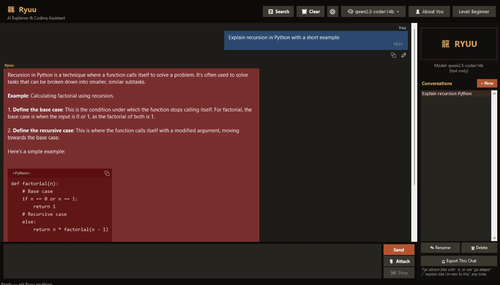
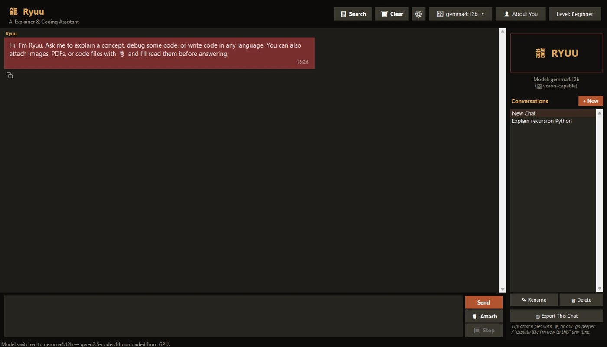

03 · Offline AI assistant
Ryuu Explainer AI
A private desktop assistant that explains concepts, debugs code and writes it in any language. It runs entirely on local models, including on Intel Arc integrated graphics.
Built by Adithya V, computer science student at KCT, Coimbatore.


About Ryuu Explainer AI
Ryuu is an AI explainer and coding assistant that lives on your own computer. Ask it to explain a concept, debug some code or write code in any language, and pick a level from beginner upwards so the answer fits you.
You can attach screenshots, PDFs and code files, or paste an image straight in. When an image needs reading, Ryuu swaps to a vision model for that reply, keeping only one model loaded on the GPU at a time.
Conversations are saved locally, searchable and exportable as JSON or text. Everything runs through Ollama with no accounts and no API keys, including on Intel Arc integrated graphics through Vulkan.
More projects by Adithya V
- TQQ ChatboxFive fine-tuned models, one app
- Serene Mind AIWellness companion, own model
- Ryuu Hostel Management SystemWeb system, live demo
- KCT IDEA Lab websiteCollege website, built solo
- Ryuu AniverseCharacter chat, 100 characters
- Personality AICharacter chatbot
- Ryuu SmartPickupStartup prototype
- PawFinderWeb platform, live
- Automobile LabHardware and web interface
- CS GPT for CBSE 11 & 12Learning tool
- Ryuu v1 modelsSix open models